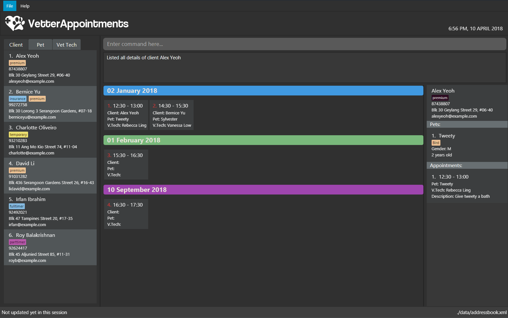

By: F09-B4 Since: March 2018 Licence: MIT
- 1. Introduction
- 2. Quick Start
- 3. Features
- 3.1. System Based Commands & Features
- 3.2. Client & Staff Related Commands
- 3.2.1. Adding a person:
addSince v1.1 - 3.2.2. Removing a client or vet technician:
deleteSince v1.1 - 3.2.3. Editing a client or vet technician’s details :
editSince v1.1 - 3.2.4. Finding by name:
find - 3.2.5. Listing all information:
listallcoming v2.0 - 3.2.6. Listing all clients:
list clientSince v1.2 - 3.2.7. Listing all vet technicians:
list vettechSince v1.2 - 3.2.8. Selecting a client, pet or vet technician:
select - 3.2.9. Sorting clients in alphabetical order:
sortc - 3.2.10. Sorting clients in alphabetical order:
sortvcoming in v2.0
- 3.2.1. Adding a person:
- 3.3. Pets & Appointment Related Commands
- 3.3.1. Adding an appointment to a pet:
addappttopetSince v1.3 - 3.3.2. Adding a pet:
addpSince v1.2 - 3.3.3. Removing a pet:
deletepSince v1.2 - 3.3.4. Editing a pet’s appointment:
editapptcoming v2.0 - 3.3.5. Editing a pet’s details:
editpcoming v2.0 - 3.3.6. Listing all appointments:
list apptcoming v2.0 - 3.3.7. Listing all pets:
list petSince v1.2 - 3.3.8. Removing an appointment from a pet:
removemapptfromsince v1.3 - 3.3.9. Scheduling an appointment :
schedule - 3.3.10. Sorting pets in alphabetical order:
sortp
- 3.3.1. Adding an appointment to a pet:
- 4. FAQ
- 5. Command Summary
1. Introduction
If you’re a vet and have trouble managing your clients' appointments, then VetterAppointments is the right program for you.
VetterAppointments allows you to have better control of your scheduling process
and manages them better by organizing all of your appointments and
displays only important information to you. The program strips away any unnecessary clutter
and allows you to focus on what matters to you the most; your clients, the animals under your
care and their appointments, and your staff. This allows the program to help you out on managing your clients.
VetterAppointments works on a Command Line Interface (CLI) feature supported by a well thought-out Graphical User Interface (GUI).
This allows you to quickly type in the commands in the command box instead of messing around with the interface. Do bear in mind that
anything that could be done with the mouse can also be done by commands in the program.
Don’t worry, this user guide will help you along and guide you on how to get VetterAppointments up and running as well as reveal all the features and commands available to you.
2. Quick Start
-
Ensure you have Java version
1.8.0_60or later installed in your Computer.Having any Java 8 version is not enough.
This app will not work with earlier versions of Java 8. -
Download the latest
VetterAppointments.jarhere. You’ll be see the version releases of the program there similar to the image below. -
Copy the file to the folder you want to use as the home folder for your VetterAppointments.
-
Double-click the file to start the app. The program should start up and looks like the image below.
Figure 1. VetterAppointments program interface upon starting up.Don’t worry if you’re seeing names of people you don’t know! They’re there by default. You can type clearon the command box and press Enter on your keyboard to remove them.
3. Features
Understanding the Command Format
We’ll need to understand how a command format is laid out before diving into the program.
Here’s an example of a command format:
add r/ROLE n/NAME p/PHONE e/EMAIL a/ADDRESS [t/TAG]…
-
The first word of the command format
addstates the type of the command. There are many types of commands likeaddpaddappttopetdeletepand etc. But don’t worry, we’ll go through them in the user guide. -
Following the
addare the parameters or the arguments that the command needs. In this case, theaddcommand require these parameters from you:ROLE Role of the person being added into the program.
NAME The name of the person being added into the program.
PHONE The phone number of the person being added.
EMAIL A valid email consisting of existing domain and proper format of the person.
ADDRESS The address of the person being added.
TAGS (OPTIONAL)
-
Parameters in uppercase states that they need to be supplied by the user. They have a prefix on them like r/, n/, p/, e/, a/ and t/ that needs to be typed by the user. These prefixes tells the program the different parameter types.
-
Parameters enclosed by square brackets like [t/TAG] suggests that the argument is optional.
The user may choose to omit the parameter or add it. -
Parameters with … appended to it, for example [t/TAG]… suggests that the parameter can be added multiple times.
If the user chooses to do, he or she should not omit the prefix of the argument, for this instance, t/. -
Parameters of the commands can be typed in any order that the user chooses as long as the prefix of the argument is not omitted.
3.1. System Based Commands & Features
This section explains all the commands and features that are available in the program. These commands are not directly related to your clients, staff, pet and appointments. This section will also explain some of the features in depth. Feel free to head down to the command summary for a quick glance of the available commands relating to the program Section 5.3, “Program and Shared Summarized Table”.
3.1.1. Autocomplete
If you’re feeling lazy to type in the command type, press Tab on your keyboard
and it’ll do the rest for you.
3.1.2. Executing a command
Every command in VetterAppointments are executed by first entering the command type
and its respective parameters. To execute the command, simply press the Enter
key on your keyboard.
| Don’t worry if you can’t remember the parameters of a command type. Pressing Enter before a complete command sentence will display the necessary parameters required for the command. |
3.1.3. Clearing all entries : clear
Command format: clear
Clears all entries from the address book.
clear command will remove all existing clients, pets, appointments and vet technicians
stored in your program.
|
3.1.4. Exiting the program : exit
Command format: exit
Exits the program.
| Exiting the program in the middle of a command will save the state of the program. So there’s nothing to worry about, all your data will be saved. |
3.1.5. Viewing help : help
Command format: help
Upon entering the help command, a User Guide manual will pop up displaying the
available commands for you. You can always enter the help command if you need help
with the program.
3.1.6. Listing entered commands : history
Command format: history
Lists all the commands that you have entered in reverse chronological order.
|
Pressing the ↑ and ↓ arrows will display the previous and next input respectively in the command box. |
3.1.7. Redoing the previously undone command : redo
Format: redo
Reverses the most recent undo command.
|
Redoable commands: those commands that modify the address book’s content: |
3.1.8. Undoing previous command : undo
Command format: undo
Restores the address book to the state before the previous undoable command was executed.
|
Undoable commands: those commands that modify the address book’s content: |
3.2. Client & Staff Related Commands
This section explains and goes through the commands and features available to manage your client and staff in the clinic. It explains the commands available thoroughly and provides valid examples so you can grasp the commands available quickly. For a summary of all the commands available relating to your clients and staff, head down to Section 5.1, “Client & Vet Tech Summarized Table”.
3.2.1. Adding a person: add Since v1.1
Command format: add r/ROLE n/NAME p/PHONE_NUMBER e/EMAIL a/ADDRESS [t/TAG]…
The add command will insert a new person’s details into the program upon entering.
The command expects these parameters when adding a new person:
| ROLE |
VetterAppointment expects a role to be either a VetTechnician or a Client.
You cannot omit this parameter. |
| NAME |
A name must be provided by the user for the person to be added. |
| PHONE |
A phone number consisting of only numbers must be supplied by the user. |
|
A valid email address must be provided with a valid domain and format. |
|
| ADDRESS |
An address for the person to be added must be supplied by the user. |
| TAGS |
The tags for the person to be added. This field can be omitted and used multiple times and should not contain any spaces. |
Here are some valid examples on how to use the add command:
-
add r/Client n/Alice Peterson p/91234567 e/alicepeter@email.com a/Blk 123, Bedok Reservoir St24
In this scenario, you choose to omit the tag parameter for Alice Peterson who is your client. -
add r/Client n/Bradly Cooper p/91234567 e/bradlycooper@email.com t/friend t/dog_whisperer a/Blk 123, Bedok Reservoir St24
In contrast, here you choose to add multiple tags to Bradly Cooper, your client as well.
The figure below is an example of the result upon executing the add command.
Here, we use add r/client n/Davis Teo p/91234765 e/davis@email.com a/123, Clementi Ave 4, #05-06 t/friend
as an example.
3.2.2. Removing a client or vet technician: delete Since v1.1
Command format: delete INDEX
The delete command will remove a client from your program if you’re viewing the client list.
Executing this command will remove all the pets associated to the client.
The delete command will remove a vet technician your program if
you’re viewing the vet technician list. The command expects this parameter when called:
| INDEX |
The client or vet technician’s index on the list displayed in the program. This must be supplied by the user. |
Here is an example of using the command delete:
-
delete 1
Suppose you are currently viewing the 'client' list and there is only one client in your program called Alice Peterson and she has Garfield and Scooby Doo as her associated pets. This command will remove Alice, Garfield and Scooby Doo from the program.
3.2.3. Editing a client or vet technician’s details : edit Since v1.1
Command format: edit INDEX [r/ROLE] [n/NAME] [p/PHONE] [e/EMAIL] [a/ADDRESS] [t/TAG]…
The edit command amends the details of an existing client or vet technician, depending on which list the vet is currently viewing.
The details of the specified person’s index will be replaced with the supplied parameters from the user.
The existing details will be overriden. The command expects these parameters:
| INDEX |
The index of the person that the user wants to edit. It must be supplied by the user. |
| ROLE |
The new role of the person that the user wants. It need not be supplied by the user. |
| NAME |
The new name of the person that the user wants. It need not be supplied by the user. |
| PHONE |
The new phone number of the person that the user wants. It need not be supplied by the user. |
|
The new email of the person that the user wants. It need not be supplied by the user. |
|
| ADDRESS |
The new address of the person that the user wants. It need not be supplied by the user. |
| TAGS |
(OPTIONAL) |
The edit command is very similar to the add command.
Here are some examples on using the command:
-
edit 1 e/newemail@email.com a/Blk 123, Clementi Ave 3 t/friend t/part_timer
You choose to amend person 1 on the currently viewed list and changes the person’s email, address and tags. -
edit 1 n/Mary Tan
You choose to only change the name of the person specified at index 1 on the currently viewed list and omits the remaining parameters.
3.2.4. Finding by name: find
Command format: find KEYWORD
The find command displays all existing clients or pets containing the keyword.
The command expects these parameters:
| KEYWORD |
The keyword to find the client or pet. It must be supplied by the user. |
Here is an example on how to use the find command:
-
find alice
You used the keyword alice to find all clients containing the word alice in their names. -
find gArfIeld
You used the keyword gArfIeld to find all pets containing the word garfield in their names.
| The keyword is case insensitive.This means typing, "ALICE", "alice" or 'AlIcE" will result in the same output. |
| You need to be in the client list to find clients by name. Likewise, you need to be in the pet list to find pets by name. |
3.2.5. Listing all information: listall coming v2.0
Command format: listall INDEX
The listall command will display all pets and appointments that are tagged to a client.
The command expects this parameter when called:
| INDEX |
The index of the client that you wish to view the details of. This must be supplied by the user. |
Here is an example of using the command listall:
-
listall 1
Suppose there is only one client in the program and is stored at index 1. This command will then display all the information regarding the person at index one.
3.2.6. Listing all clients: list client Since v1.2
Command format: list client
The list client command will display all clients that are stored in the program.
It automatically switches to the client view tab so you can view all your clients at a glance.
Here’s the resulting output if you executed the command. Notice how it switches to the
client list tab below.
list client command.3.2.7. Listing all vet technicians: list vettech Since v1.2
Command format: list vettech
The list vettech command will display all vet technicians that are stored in the program.
It automatically switches to the vet technician tab so that you can view them at a glance.
Here’s the resulting output if you executed the command. Notice how it switches to the
vet tech list tab below.
list vettech command.3.2.8. Selecting a client, pet or vet technician: select
Command format: select INDEX
The select command selects the client, pet or vet technician identified by the
index number on the currently viewed list. The command expects this parameter:
| INDEX |
The index of the client, pet or vet technician that the user wants to select. It must be supplied by the user. |
Here is an example on using the command:
-
select 3
Let’s say you’re currently viewing the client list and wishes to select the 3rd client on the list. The program will scroll to and select the 3rd client on the list.
3.2.9. Sorting clients in alphabetical order: sortc
Command format: sortc
The sortc command will sort all existing clients in the program in alphabetical ordering.
3.2.10. Sorting clients in alphabetical order: sortv coming in v2.0
Command format: sortv
The sortc command will sort all existing vet technicians in the program in alphabetical ordering.
3.3. Pets & Appointment Related Commands
This section explains and goes through in depth, the commands and features available that are directly related to your pets and appointments. You can head down to the Section 5.2, “Pets & Appointments Summarized Table” to view the summarized table of all the available commands.
3.3.1. Adding an appointment to a pet: addappttopet Since v1.3
Command format: addappttopet appt/APPOINTMENT_INDEX pn/PET_INDEX
The addapptto command adds an appointment to a pet in the program.
The command expects these parameters when adding an appointment to a pet:
| APPOINTMENT INDEX |
The index of the appointment in the list. It must be supplied by the user. |
| PET INDEX |
The index of the pet in the list. It must be supplied by the user. |
Here are some valid examples on using the addappttopet command:
-
addappttopet appt/1 p/1
This will add the first appointment in the appointment list to the first pet in the pet list. Once this is executed, the pet will now have that appointment. -
addappttopet appt/2 p/1
This will add the second appointment in the listing to the first pet again. Doing this means you’ve just scheduled two appointments to the same pet.
| You need to schedule an appointment first before adding it to a pet. |
3.3.2. Adding a pet: addp Since v1.2
Command format: addp c/CLIENT_INDEX pn/PET_NAME pa/PET_AGE pg/PET_GENDER t/PET_TAG…
The addp command adds a pet to the program with its details.
The command expects these parameters when adding a pet to a client:
| CLIENT INDEX |
The index of the client to add the pet to must be supplied the user. |
| PET NAME |
The name of the pet to be added to a client must be supplied by the user. |
| PET AGE |
The age of the pet must be supplied by the user. It must contain only numbers. |
| PET GENDER |
The gender of the pet must be supplied by the user. It can only be male or female. |
| PET TAGS |
The pet tags should be supplied by the user. Pet tags will represent the species and breed of the pet. |
Here are some valid examples on how to use the addp command:
-
addp c/1 pn/Garfield pa/10 pg/M t/cat t/tabby
Here, you choose to add Garfield to client of index 1 of age 10 and is a male. Garfield is a cat and a tabby. Garfield is also owned by the client at index 1 -
addp c/1 pn/Scooby Doo pa/5 pg/M t/dog t/greatdane
Here you choose to add another pet called Scooby to client of index 1 Doo of age 5 and is a male. Scooby Doo is a dog and a great dane. So now the client of index 1 owns both Scooby Doo and Garfield.
Say your program already consist of only David Teo as your client. After executing the example addp
commands, David Teo will now have Garfield and Scooby Doo as his pets. Below are the results
upon executing the addp command.
3.3.3. Removing a pet: deletep Since v1.2
Command format: deletep INDEX
The deletep command will remove a pet from the program. Executing this command will remove
the pet from your program. The command expects this parameter when called:
| INDEX |
The client’s index in the program. This must be supplied by the user. |
Here is an example of using the command deletep:
-
deletep 1
Suppose there is only one pet in the program called Garfield, Garfield will be entirely removed from your program.
3.3.4. Editing a pet’s appointment: editappt coming v2.0
Command format: editappt n/CLIENT_NAME pn/PET_NAME [date/DATE (DD.MM.YYYY)] [time/TIME (HHMM)] [vettech/VET_TECHNICIAN_NAME] [cmt/COMMENTS]
The editappt command edits the appointment date and detail of an existing pet.
The command expects these parameters when executing:
| CLIENT NAME |
The name of the pet’s owner. This must be supplied by the user. |
| PET NAME |
The name of the pet. This must be supplied by the user. |
| DATE |
The new date of the new appointment in DD.MM.YYYY format. It need not be supplied by the user. |
| TIME |
The time of the new appointment in HHMM format. It need not be supplied by the user. |
| VET TECHNICIAN |
The name of the new vet technician in-charged of the new appointment. It need not be supplied by the user. |
| COMMENTS |
The new comments for the appointment. It need not be supplied by the user. |
3.3.5. Editing a pet’s details: editp coming v2.0
Command format: editp INDEX [pn/PET_NAME] [pa/PET_AGE] [pg/PET_GENDER] [t/PET_TAGS]…
Similar to the edit command, the editp command amends the details of a specified pet of the specified owner. The command expects these parameters when executing:
| INDEX |
The index of the pet that the user wants to amend. This must be supplied by the user. |
| PET NAME |
The new pet name the user wants to change. It need not be supplied by the user. |
| PET AGE |
The new pet age the user wants to change. It need not be supplied by the user. |
| PET GENDER |
The new pet gender the user wants to change. It need not be supplied by the user. |
| PET TAGS |
(OPTIONAL) |
Here is an example of using the editp command:
-
editp 1 pn/Jerry pa/2 pg/M
Here you choose to edit the pet of the first index and changed the existing name, age and gender to Jerry, 2 and male.
3.3.6. Listing all appointments: list appt coming v2.0
Command format: list appt
The list appt command will display all appointments that are pending for you.
The list sorts upcoming appointments by date and then by time.
3.3.7. Listing all pets: list pet Since v1.2
Command format: list pet
The list pet command will display all pets that are stored in the program.
It automatically switches to the pet view tab so you can view all your pets at a glance.
Here’s the resulting output if you executed the command. Notice how it switches to the
pet list tab below.
list pet command.3.3.8. Removing an appointment from a pet: removemapptfrom since v1.3
Command format: removeapptfrompet appt/APPOINTMENT_INDEX
The rmapptfrom command removes an associated appointment from a pet.
The command requires the index of the appointment in the appointment list.
The command expects these parameters:
| APPOINTMENT INDEX |
The appointment to be removed based on the appointment listing. This needs to be supplied by
the user. |
Here is an exammple of using the command rmapptfrom:
-
rmapptfrom appt/1
When this command is executed, the appointment will be removed from the pet that is associated to it.
| The command does not remove the appointment itself, rather, the pet associated with the appointment. So don’t worry, you don’t have to reschedule the appointment. |
3.3.9. Scheduling an appointment : schedule
Command format: schedule da/DATE tm/TIME du/DURATION desc/DESCRIPTION
Schedules an appointment by specifying the date, time, duration and description.
| DATE |
The date of the appointment in YYYY-MM-DD format. This needs to be supplied by the user. |
| TIME |
The time of the appointment in HH:MM format. This needs to be supplied by the user. |
| DURATION |
The duration of the appointment, or how long it is in minutes. This needs to be supplied by the user. |
| DESCRIPTION |
A brief information or description of the appointment. This needs to be supplied by the user. |
Here is an example on how you can use the schedule command to mark appointment dates:
-
schedule da/2018-10-10 tm/15:00 du/40 desc/Sterilize Garfield when he’s feeling better.
You’ve just made an appointment on 2018-10-10 at 1500 hours. It will last for 40 minutes and dedicated to sterilizing Garfield.
| VetterAppointments will make sure you have breaks for your meals. This means that you cannot schedule appointments that are too close with one another. |
| VetterAppointments will also make sure you don’t accidentally book the same time slot for an appointment. Therefore you’ll never have a clash in schedules. Don’t worry, we’ll inform you if there are any conflicts in your scheduling. |
You can execute the addappttopet command after creating an appointment.
|
3.3.10. Sorting pets in alphabetical order: sortp
Command format: sortp
The sortp command will sort all existing pets in the program in alphabetical ordering.
4. FAQ
Q: How do I transfer my data to another Computer?
A: Install the app in the other computer and overwrite the empty data file it creates with the file that contains the data of your previous VetterAppointments folder.
Q: My program crashed halfway. Will all the data be safe?
A: Yes it will. VetterAppointments ensures that all modification to the program data will be saved.
Q: The commands are long. Are there anyway to speed up the process?
A: Yes there is! We have an autocomplete feature that you might find useful. See 3.1. Autocomplete for more details.
5. Command Summary
This section provides a quick summary of all the available commands in the program. It’s categorized neatly so you can find the command that you want easily.
5.1. Client & Vet Tech Summarized Table
The table below lists and summarizes all the commands that are related to the persons in your program. You can head to the respective section on the commands if you want to know more about them.
Command |
Command Format |
Description |
add |
|
Adds a person into the program. |
delete |
|
Remove a client/vettech from the program based on index. |
edit |
|
Edits a person’s details. |
find |
|
Finds a client with keyword. |
listall |
|
Lists all details for a particular client. |
list client |
|
Lists all clients. |
list vettech |
|
Lists all vet technicians. |
select |
|
Selects an index. |
sortc |
|
Sorts the client list alphabetically. |
sortv |
|
Sorts the vet tech list alphabetically. |
5.2. Pets & Appointments Summarized Table
The table below lists and summarizes all the commands that are related to the pets and appointments in your program. You can head to the respective section on the commands if you want to know more about them.
Command |
Command Format |
Description |
addappttopet |
|
Adds an appointment to a pet. |
addp |
|
Adds a pet to a client. |
deletep |
|
Removes a pet from the program based on index. |
editappt |
|
Edits an appointment’s details. |
editp |
|
Edits a pet’s details. |
list appt |
|
Lists all appointments. |
list pet |
|
Lists all pets. |
rmapptfrompet |
|
Removes an appointment from a pet. |
schedule |
|
Schedule an appointment given date (YYYY-MM-DD), time (HH:MM), duration (minutes) and description. |
select |
|
Selects an index. |
sortp |
|
Sorts the pet list alphabetically. |
5.3. Program and Shared Summarized Table
The table below shows commands that are program based. These commands have no relation to your clients, staff, pets and appointments. They’re solely for the program.
Command |
Command Format |
Description |
clear |
|
Deletes all data of the program. |
exit |
|
Exits the program. |
help |
|
Displays the user guide. |
history |
|
Lists the history of commands executed. |
redo |
|
Redo the undo command executed. |
undo |
|
Undo the previous command executed. |